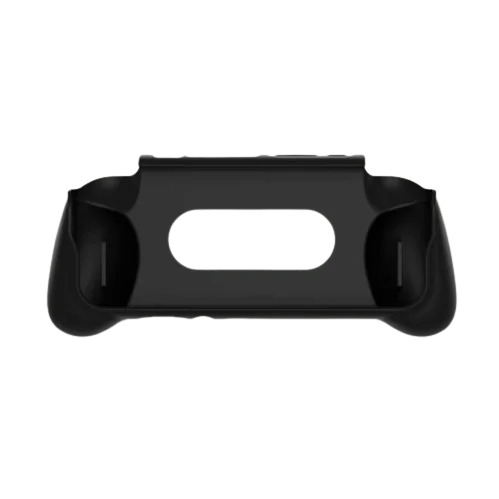

Retroid Official Grip for RP4/4Pro

Experimenta un confort i control millorats durant les teves sessions de joc amb l'empunyadura oficial de Retroid per a la Pocket 4 i 4 Pro. Dissenyada ergonòmicament per adaptar-se perfectament a les mans, aquesta empunyadura redueix la fatiga durant les partides llargues i proporciona una subjecció més segura i ferma de la teva consola. Fabricada amb materials de qualitat i amb un ajust precís, no obstaculitza l'accés a cap port o control de la teva RP4/4Pro. Augmenta la teva precisió i gaudeix d'una experiència de joc encara més immersiva amb aquest accessori oficial i essencial per a la teva Retroid Pocket 4 o 4 Pro.